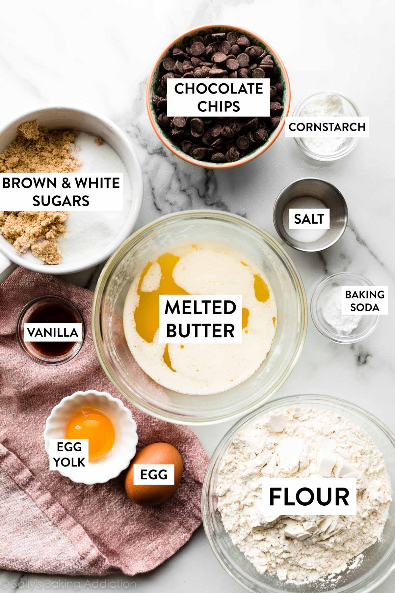

Home page

Ingredients
- 2 and 1/4 cups (280g) all-purpose flour (spooned & leveled)
- 1 teaspoon baking soda
- 1 and 1/2 teaspoons cornstarch
- 1/2 teaspoon salt
- 3/4 cup (170g / 12 Tbsp) unsalted butter, melted & cooled 5 minutes
- 3/4 cup (150g) packed light or dark brown sugar
- 1/2 cup (100g) granulated sugar
- 1 large egg + 1 egg yolk, at room temperature
- 2 teaspoons pure vanilla extract
- 1 and 1/4 cups (225g) semi-sweet chocolate chips or chocolate chunks
To see instructions for making cookie